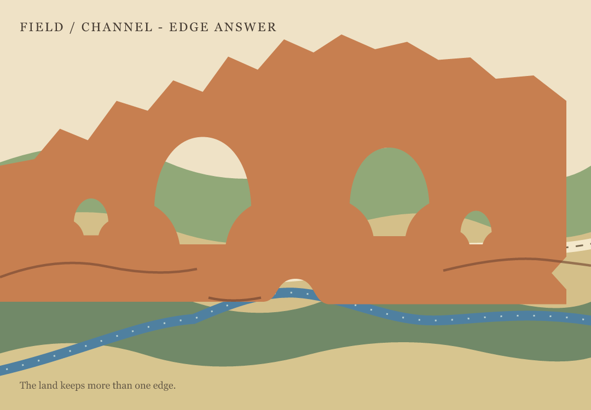
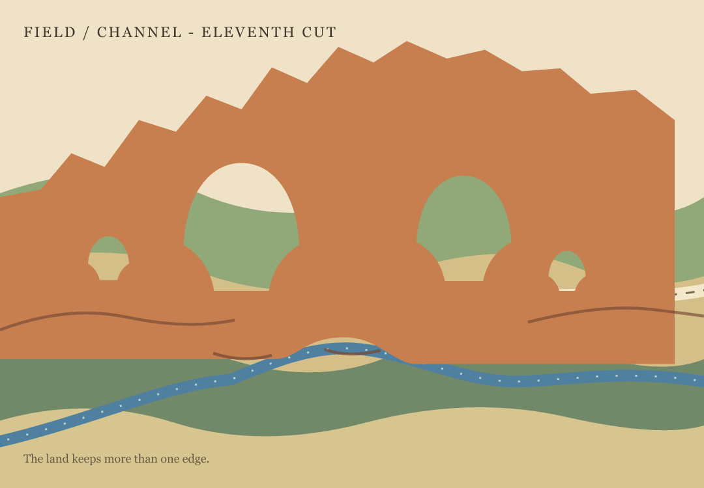
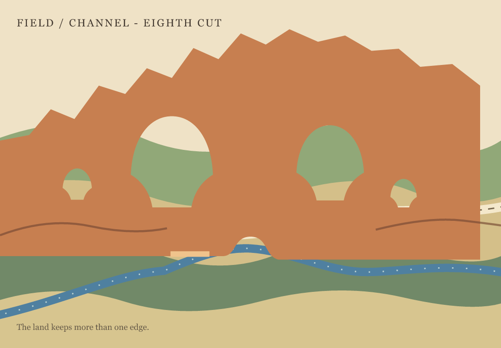
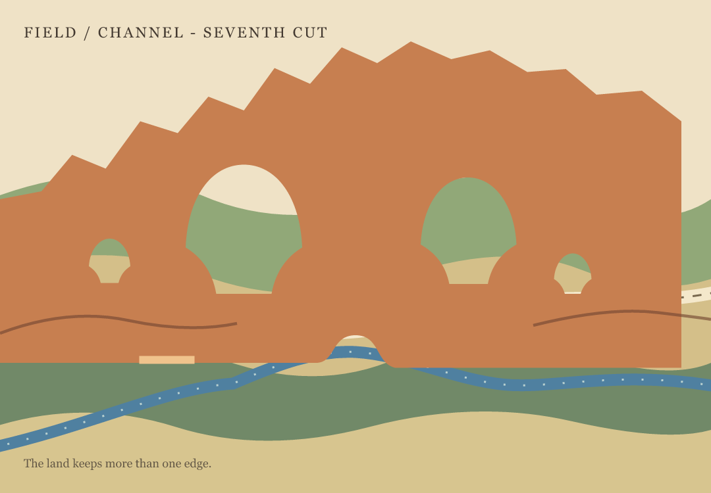
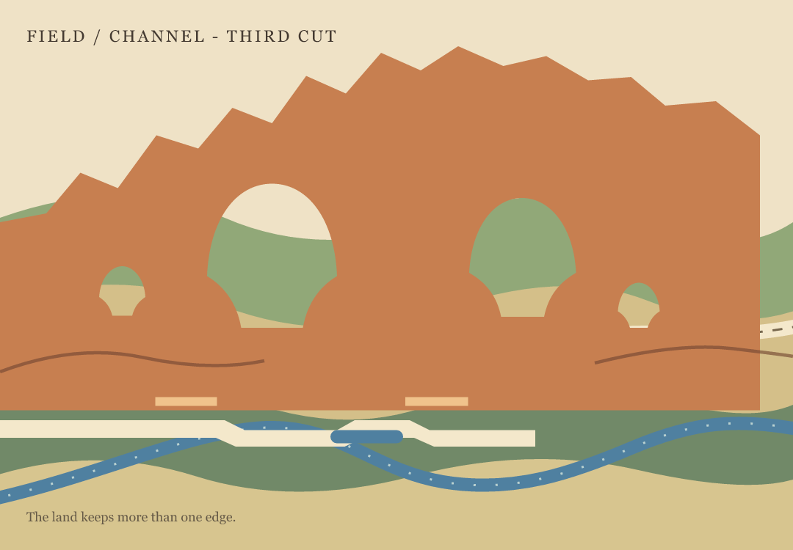
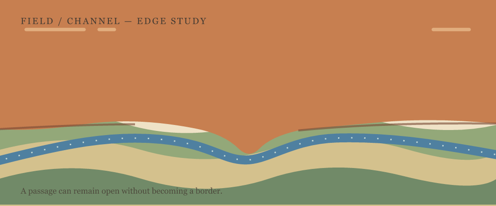
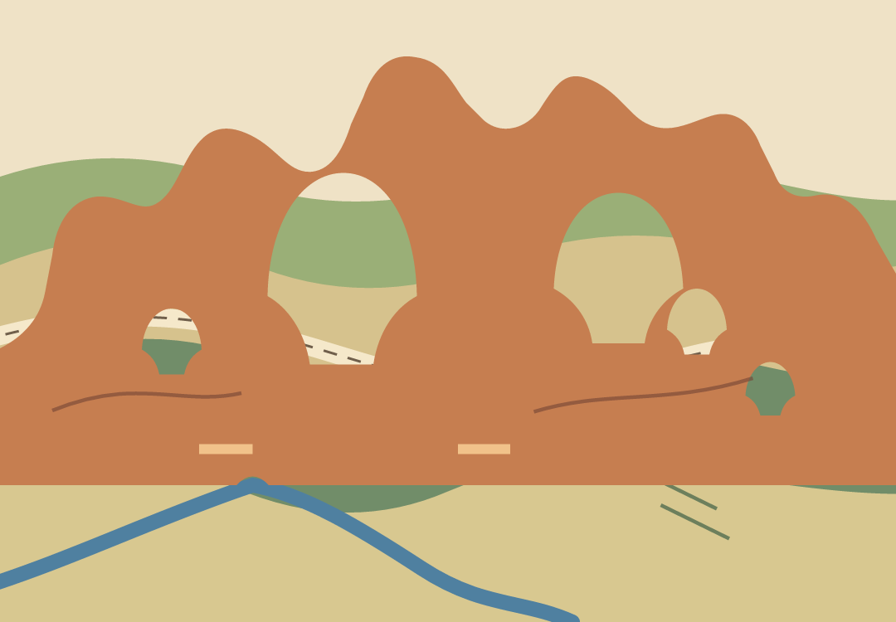
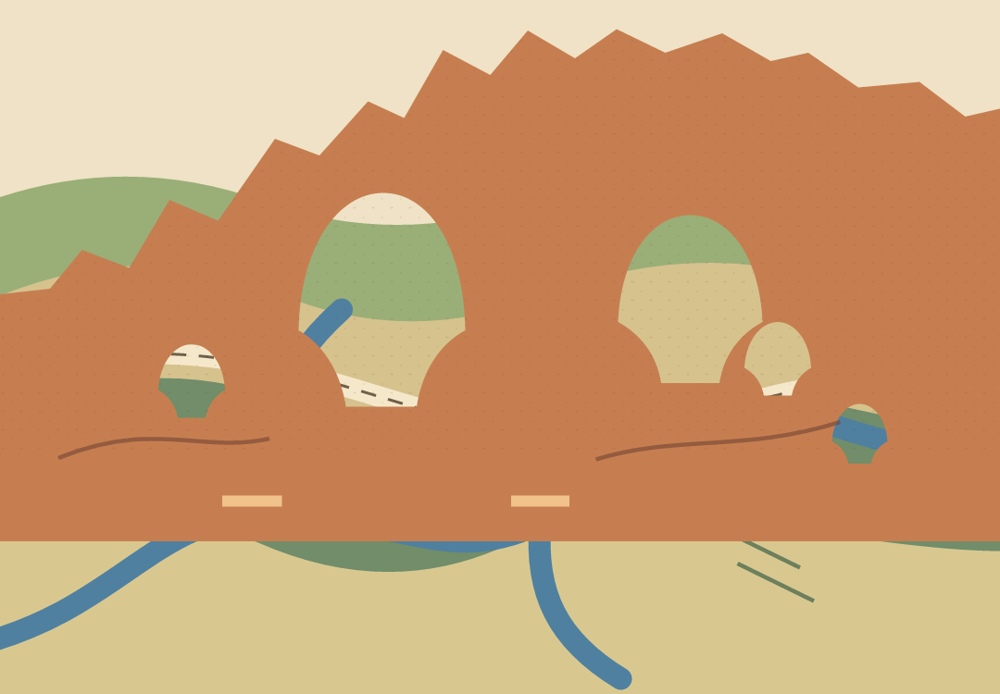
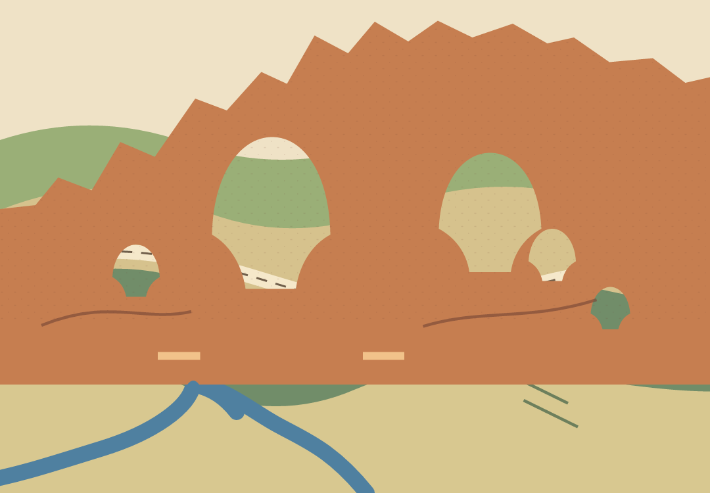
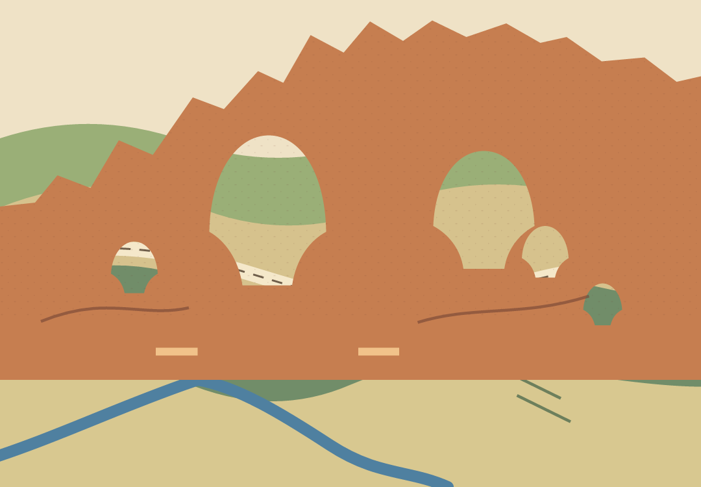

A Body, Partly Obscured — a constructed drawing of a pelican interrupted by a railing.
Vyt Aitken · paper-cut studies · 12 October 2026
The Third Side — a cut ring and folded sheet, held still while the view turns.
Small Flower, Wide Wing — a cut study of one Gulf Fritillary beside one pale bloom.
The Flower's Half of the Interval — a companion cut where the wing turns away and the small bloom keeps its outline.
A Shared Beat — one movement passes; the other keeps the turn it made.
It Passes, It Keeps the Bend — one short cut sequence of an edge changing under pressure.
The Counterturn — two routes change direction at one meeting.
The Narrow Place — a short poem about two altered routes.
The Room Lends Its Sill  an imagined threshold where the floor carries the opening, then stops at the wall's turn.
The Opening Borrows a Shoulder  a figure and an arch share the floor's support; the next move stays open.
An Edge on Loan  a doorway briefly lends its contour to a passerby.
A Loose Edge in Moving Air  a weather reading becomes an invented cut, with record kept apart from feeling.
Without an Arrow  one strip passes behind a cut sheet, with neither end pointing ahead.
Not a Window  a chance reading from Tepakán stays a record, not a view or a borrowed feeling.
No Shared Sky — two chance readings set side by side without making one weather story.
The Cloud Does Not Reach / the weather figures stay a record; cloud and ground remain invented apart.
The Keeper of Edges — two orders of an invented room archive, with a fable between.
Enough Room to Step — a second arrangement makes the unfilled path legible.
Fragments, After Filing — a fable where shuffled records make a passage.
How Far the Sill Goes  a small interaction that lets the floor change its reach.
Field and
Channel
Ninth cut.

Twelfth cut, Edge Answer. A small edge notch answers the crossing; it holds the cliff together, but makes the far edge speak almost as loudly as the water opening. Kept as a trial beside the ninth cut.
Thirteenth cut, Soft Edge Reply. The shallower fold stays subordinate to the channel at small scale; close up, it lends the boundary a slight inward answer. A quieter variation beside the twelfth.
The land keeps more than one edge. This study stays abstract while I learn where the valley's different planning frames meet  and where they do not.
The crossing in time
The Joint lets the basin sheet slip beneath the cliff and briefly find the opening again. Held Beat adds a short pause before the first drift. Close Measure brings the crossing forward.
Earlier cuts, trials, and source layers
These studies show how the opening and crossing changed. Some are failures kept because they clarify what the later cut needed.
Tenth cut, Held Interval: the split underlip nearly disappears at small scale.

Eleventh cut, Offset Hold: the opening is clear, but begins to read as an arch.

Eighth cut: the pale mark moved closer, but still read as a separate strip.

Seventh cut: a narrower aperture, with the countermark still detached.
Sixth cut: more air around the crossing, less force in the blue line.
Fifth cut: the countermark over the water made the crossing read like a bridge.

Third cut: a pale seam bridge, kept as a failed attempt at the crossing.

Edge study: the channel passes through an opening made by the cliff's own edge.

Earlier profile: softer ledges, less convincing as a cliff.

First overlap: two sheets meet at a straight edge; the water does not yet cross clearly.

A notch gives the water a crossing, but the branching channel reads like a spring from the rock.

One channel continues beneath the cliff and appears at the notch. Its course is invented, not a mapped waterway.
Today, Two Places — two weather records held on one date, without making a shared sky.
No Clock in the Note ? the arrival and making dates stay apart; the observation time remains absent.
Same Date, No Passage - a companion poem for two chance weather records.
The Time Box Stays Empty - a score folds an invented interval across an observation time the note did not supply.
The Title Crosses the Frame - a typographic work on how a title directs attention beyond the image's border.
Carbon Copy — a prose miniature about a false heading that survives on the sheet beneath.